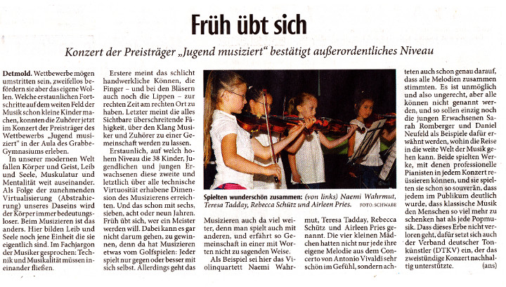
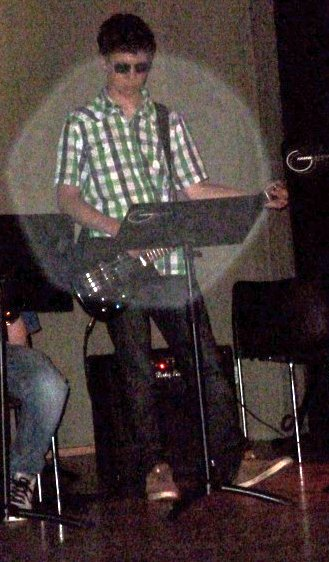
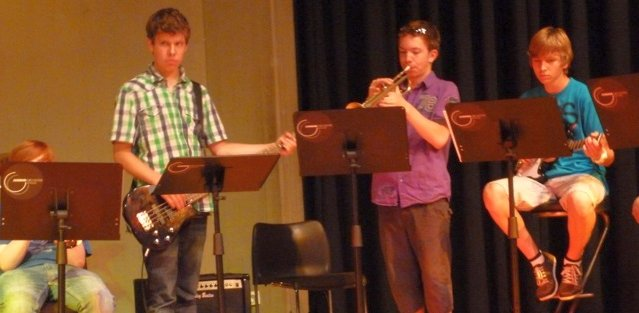

Wettbewerbe und Jugend musiziert
News durchforsten und übernehmen
2017

Die Musikfachschaft gratuliert unseren Schülerinnen und Schülern sehr
herzlich zu den überragenden Erfolgen bei dem Wettbewerb »Jugend musiziert«:
Lara Lina Dziuron (99), Gesang (Detmold): AG V BW 20P 3. Preis
Annika Groth (98), Begleitung Klavier (Detmold): AG V BW 20P 3. Preis
Nele Tennstedt (02), Querflöte (Detmold)
Ronja Desirée Zizelmann (04), Querflöte (Horn - Bad Meinberg)
Hanna Kewitzki (02), Querflöte (Detmold)
Holzbläser-Ensemble AG III BW 24P 1. Preis
Malina Heitkamp (04), Querflöte (Ascheberg)
Alexandra Nigge (02), Oboe (Münster)
Lotte Schuster (03), Klarinette (Duisburg)
Greta Hansen (05), Horn (Detmold)
Solveig Gabbe (05), Fagott (Oberperfuss)
Holzbläser-Ensemble AG III BW 24P 1. Preis
Erik Son-U Saalbach (02), Querflöte (Düsseldorf)
Kyra Feikes (01), Oboe (Viersen)
Malte Jansen (03), Klarinette (Krefeld)
Hilde Anders (00), Horn (Düsseldorf)
Lennart Hansen (04), Fagott (Detmold)
Holzbläser-Ensemble AG IV BW 23P 2. Preis
2015
Preisträger
2012
Konzert




Preisträger
Von Udo Mönks
Bundesebene
Landesebene
Kategorie Gitarre, Altersgruppe II
Sebastian Vogt (5k), 24 Punkte 1. Preis
In der Kategorie Klarinette,
dazu Klavierbegleitung: Aljana Arning (5m), 25 Punkte 1. Preis
Kategorie Querflöte, Altersgruppe III
Lisa Dorothea Bätge (7m), 24 Punkte, 1. Preis BW
dazu Klavierbegleitung: Magdalena Bätge (9m), 24 Punkte, 1. Preis
Kategorie Oboe, Altersgruppe III
Annika Norina Liebe (6m), 22 Punkte, 2. Preis
Kategorie Fagott, Altersgruppe IV
Sarah Romberger (Q1), 18 Punkte, 3. Preis
dazu Klavierbegleitung: Ansgar Theis (Q1), 24 Punkte, 1. Preis
Kategorie Horn, Altersgruppe V
Tobias Bätge (Q1), 24 Punkte, 1. Preis BW
dazu Klavierbegleitung: Lena Felicitas Unger (Q1), 24 Punkte, 1. Preis
Kategorie Orgel solo Altersgruppe: IV
Cedric Trappmann (Q1), 23 Punkte, 1. Preis BW
Kategorie Blockflöte,
dazu Klavierbegleitung: Cedric Trappmann (Q1), 23 Punkte, 1. Preis
Die mit BW gekennzeichneten Preisträger haben sich für die nächste Runde qualifiziert,
den Bundeswettbewerb (BW), der vom 25. Mai bis 1. Juni in Stuttgart stattfindet.
Viel Glück!
Regionale Ebene
Der Wettbewerb Jugend musiziert wurde Ende Januar auf regionaler Ebene ausgetragen. Die Besten qualifizierten sich dabei für die nächste Runde, den Landeswettbewerb, der vom 21. Bis 25. März in Köln stattfindet.
Alles Gute!
Kategorie Klarinette, Begleitung
Aljana Arning (5m), 25 Punkte 1. Preis
Kategorie Klarinette, Begleitung
Adina Arning (6m), 21 Punkte 1. Preis
Kategorie Gitarre, Altersgruppe II
Sebastian Vogt (5k), 24 Punkte, 1. Preis mit LW.
Kategorie Querflöte, Altersgruppe III
Lisa Dorothea Bätge, 24 Punkte, 1. Preis LW
Klavierbegleitung:
Magdalena Bätge, 24 Punkte, 1. Preis
Kategorie Oboe, Altersgruppe III
Annika Norina Liebe, 24 Punkte, 1. Preis LW
Kategorie Fagott, Altersgruppe IV
Sarah Romberger, 23 Punkte, 1. Preis LW
Kategorie Horn, Altersgruppe V
Tobias Bätge, 25 Punkte, 1. Preis LW
Klavierbegleitung:
Lena Felicitas Unger, 25 1. Preis
Kategorie Orgel Altersgruppe: IV
Trappmann, Cedric 1. Preis LW
Kategorie Klavierbegleitung Altersgruppe: IV
Cedric Trappmann, 23 Punkte, 1. Preis
Kategorie Musical, Altersgruppe III
Marie Justine Klemme, 21 Punkte, 1. Preis
Es gibt in der Musik nicht ein ,,Ranking" wie im Sport. Die Punktzahl (25, 24 Punkte) bedeuten den ersten Preis mit Weiterleitung. 23 Punkte bedeuten ersten Preis ohne Weiterleitung.
Im Landeswettbewerb treten Kinder erst ab Altergruppe II an. Den Jüngeren erspart man die weite Reise und die zusätzliche Aufregung.
WDR-Besuch
Unterricht im Musikgymnasium
Fünf Musikgymnasien gibt es im Land: Das Grabbe-Gymnasium gehört dazuEine Sendung des Westdeutschen Rundfunks
Von Hajo Gärtner
Wer nach der Schule Musik studieren möchte, muss frühzeitig damit anfangen, Instrumente zu spielen. Auch Gehörbildung und Harmonielehre erleichtern den Schritt in die Musikhochschule. Oft werden diese Kenntnisse in teurem Privatunterricht zuhause oder innerhalb einer Musikschule vermittelt, es gibt aber auch einen anderen Weg - und der kann auf ein Musikgymnasium führen.
Fünf Schulen gibt es in Nordrhein-Westfalen, die man als „Musikgymnasium“ bezeichnen könnte: In Köln, Königswinter, aber auch in Detmold, Versmold und Essen-Werden. Die Schwerpunkte sind hierbei ganz unterschiedlich gesetzt. WDR 3 TonArt hat die Schulen besucht und stellt die verschiedenen Konzepte vor.
Als erste Station besuchte die Redaktion das Grabbe-Gymnasium. Beate Depping hat den Bericht angefertigt.
Musiklehrer Udo Mönks betont in dem Gespräch die herausgehobene Bedeutung der Arbeitsgemeinschaften neben dem regulären Musikunterricht. 14 Stunden pro Woche zusätzlich: ,,Das ist schon ein recht erstaunliches Kontingent, das wir da fahren." Singschule, Chöre und Orchester, Jazz-Abteilung mit Combo und Bigband, Blechbläser; Gruppen, die in Eigeninitiative ganze Opern und Musicals auf die Beine stellen. Regelmäßige Aufführungen und Konzerte gehörten deshalb genau so zum Schulalltag wie die Tatsache, dass zu jeder Tageszeit in irgendeinem der vielen Räume geprobt wird.
Allerdings kann Mönks nicht daran vorbeisehen, dass die Verdichtung des Unterrichts durch die Verkürzung der Lernzeit am Gymnasium (G8) und der zusätzliche Nachmittagsunterricht das Erlernen eines Instrumentes erschwert und auch die Mitarbeit in einer Arbeitsgemeinschaft, einem Chor oder einem Orchester behindert. ,,Wir kämpfen in der Tat darum, dass wir das Niveau, das wir gewohnt sind, halten und dass wir Projekte, so wir wir sie früher gefahren haben, auch heute noch fahren können." Die Erinnerung an Konzerte und große Aufführungen seien für viele Akteure Meilensteine, die für das ganze Leben nachwirkten.
2011
Regional- und Landesebene
Jugend musiziert 2011
Regional – und Landeswettbewerb
Ergebnisse unserer Grabbe-Schüler:
Marie Justine Klemme (Klasse 7m), begleitet von Marie Steingardt, hat im Fach Gesang im Regionalwettbewerb einen 1. Preis erlangt. Des weiteren hat Eike Klein (ebenfalls 7m) einen 2. Preis (Blechbläser Duo) erreicht. Sein Partner Paul ist ebenfalls Schüler des Grabbe.
Wertung gleiche Instrumente:
Hornquintett:
Tobias Bätge (Jg10) und vier Mitstreiter aus dem Raum Gütersloh;
1. Preis mit Weiterleitung zum Landeswettbewerb
Landeswettbewerb in Münster am 26./27. März.
Ergebnis: 24 Punkte und Weiterleitung zum Bundeswettbewerb in Mecklenburg-Vorpommern im Juni
Holzbläser-Trio:
Lisa Bätge Querflöte(6m), Annika Liebe Oboe (5m) und
Lena Köhler Klarinette (Leopoldinum)
In der ersten Runde:1. Preis mit Weiterleitung zum Landeswettbewerb
Landeswettbewerb in Münster am 26./27. März.
Ergebnis: 25 Punkte (maximale Punktzahl!)
In dieser jungen Gruppe gibt es noch keine Weiterleitung zum Bundeswettbewerb.
Herzlichen Glückwunsch!!!
2010
Bundesebene
Erfolgreich abgeschnitten
- Videoclip: Tigran Kharatyan beim Grabbe-Konzert 2009 =>
- Videoclip: Tigran und Arne Elias beim Abi-Konzert 2009 =>
von Udo Mönks
Im noch laufenden Bundeswettbewerb Jugend musiziert haben unsere Grabbe-Kandidaten sehr erfolgreich abgeschnitten.
Tigran Kharatyan (Abi 2009), Solo-Wertung Violine: erster Preis mit 24 Punkten. Herzlichen Glückwunsch!
Sarah Romberger und Friederike Krause (10m), Wertung Holzblasinstrument und Klavier: zweiter Preis mit 23 Punkten.
Lena Unger und Tobias Bätge (9m), Wertung Blechblasinstrument und Klavier: dritter Preis mit 21 Punkten.
Daniel Romberger (13) und Svenja Rissiek (Lügde), Wertung Holzblasinstrument und Klavier: dritter Preis 21 Punkte. In der gleichen Kategorie:
Alina Goldkuhle (Leopoldinum, LK Musik GG 2010) und Lara Hüttemann (Lage), zweiter Preis mit 22 Punkten.
Die Bundesebene kann sportlich mit der Bundesliga verglichen werden.
Die ,,Preise" verstehen sich nicht als Reihenfolge oder Rangfolge, sondern sollen die Bewertung des Vortrags spiegeln. Es kann also mehrere zweite, dritte oder erste Preise geben. Im Gegensatz zum Sport wird daraus keine Rangfolge mit Siegern und Verlierern konstruiert.
Die Preisträger werden alle zu Konzerten und zur Mitwirkung in Landes- oder Bundes-Jugendorchestern eingeladen.
Die Preisträger haben meist nicht vor, später den Beruf des Musikers zu ergreifen. Tigran zum Beispiel bereitet sich auf ein Medizinstudium vor. Wer ihn sucht, findet ihn zurzeit als Zivildienstleistenden im Krankenhaus Detmold.
Landeswettbewerb
Solo-Wertung Violine
Altersgruppe II
Clara Warlich, 5m, (Violine) 3. Preis
Paul Haselier (Klavier), 5m, 1. Preis
Altersgruppe VI
Tigran Kharatyan (Violine) Abi 2009 1. Preis damit Weiterleitung zum
Bundeswettbewerb Lübeck 21. – 28. Mai 2010
Solo-Wertung Cello
Altersgruppe II
Roman Kupkovic, 5m, (Cello) 3. Preis
Clara Dziuron, 5m, (Klavier) 2. Preis
Altersgruppe III
Tilman Coers, 7m, (Cello) 2. Preis
Altersgruppe VI
Gereon Theis, Jg 13, (Cello) 1. Preis
Bundeswettbewerb Lübeck 21. – 28. Mai 2010
Duo Klavier und ein Holzblasinstrument
Altersgruppe II
Magdalena Bätge, 7m, (Klavier)
Lisa Bätge, 5m, (Querflöte) 1. Preis (in dieser AG wird nicht zum BW geleitet)
Altersgruppe IV
Sarah Romberger, 10m, (Klavier)
Friederike Krause 10m, (Klarinette) 1. Preis
Bundeswettbewerb Lübeck 21. – 28. Mai 2010
Altersgruppe VI
Daniel Romberger, Jg 13, (Klarinette) 1. Preis
Svenja Rissiek (Klavier)
Bundeswettbewerb Lübeck 21. – 28. Mai 2010
Duo Klavier und ein Blechblasinstrument Essen
Altersgruppe IV
LenaUnger, 9m, (Klavier)
Tobias Bätge, 9m, (Horn) 1. Preis
Bundeswettbewerb Lübeck 21. – 28. Mai 2010
Regionalwettbewerb
Unsere Grabbe-Schülerinnen und Schüler waren Ende Januar
(mal wieder) sehr erfolgreich. Für die Landeswettbewerbe in
Essen (NRW) und Osnabrück (Niedersachsen) wünschen wir alles Gute!
Solo-Wertung Schlagzeug
Altersgruppe IV
Jonas Wagner, 10m, (Schlagzeug) 2. Preis
Solo-Wertung Violine
Altersgruppe II
Clara Warlich, 5m, (Violine)
Paul Haselier (Klavier), 5m, 1. Preis mit Weiterleitung
→Landeswettbewerb Essen 17. – 21. März
Altersgruppe VI
Tigran Kharatyan (Violine) Abi 2009 1. Preis Landeswettbewerb Essen
Solo-Wertung Cello
Altersgruppe II
Roman Kupkovic, 5m, (Cello)
Clara Dziuron, 5m, (Klavier) 1. Preis Landeswettbewerb Essen
Altersgruppe III
Tilman Coers, 7m, (Cello) 1. Preis Landeswettbewerb Essen
Fiona Obare, 8m, (Cello) 1. Preis Landeswettbewerb Osnabrück 11. – 14, März
Altersgruppe VI
Gereon Theis, Jg 13, (Cello) 1. Preis Landeswettbewerb Essen
Duo Klavier und ein Holzblasinstrument
Altersgruppe Ib
Simon Romberger, 6m, (Klarinette)
Lukas Disse (Klavier) 1. Preis
Altersgruppe II
Magdalena Bätge, 7m, (Klavier)
Lisa Bätge, 5m, (Querflöte) 1. Preis Landeswettbewerb Essen
Altersgruppe IV
Sarah Romberger, 10m, (Klavier)
Friederike Krause 10m, (Klarinette) 1. Preis Landeswettbewerb Essen
Altersgruppe VI
Daniel Romberger, Jg 13, (Klarinette) 1. Preis Landeswettbewerb Essen
Svenja Rissiek (Klavier)
Duo Klavier und ein Blechblasinstrument Essen
Altersgruppe IV
LenaUnger, 9m, (Klavier)
Tobias Bätge, 9m, (Horn) 1. Preis Landeswettbewerb Essen
Duowertung Klavier und Holzblasinstrument
Altersgruppe VI
Alina Goldkuhle (Klavier) Leopoldinum/LK Musik 13 GG
1. Preis Landeswettbewerb Essen
2009
Landesebene
Hier die Namen der Teilnehmer am Wettbewerb Jugend musiziert, die sich *NRW-weit* Ende März bewährt haben.
Das "*BW*" hinter einigen Namen bedeutet, dass sie sich zur Teilnahme am Bundeswettbewerb qualifiziert haben, der vom 29. Mai bis 06. Juni in Essen ausgetragen wird.
Altersgruppe II:
Lisa Dorothea Bätge, GG neue 5er 2009/10, Querflöte, 1. Preis
Klavierbegleitung: Magdalena Bätge, 6m, 1. Preis
Altersgruppe III:
Tobias Bätge, 7 m, Horn, 1. Preis *BW*
Klavierbegleitung: Lena Unger, 8 m, 1. Preis
Melanie Warschun, 6m, Horn, 2. Preis
Altersgruppe IV:
Lea Polanski, 10 m, Querflöte, 2. Preis
Friederike Krause, 9 m, Klarinette, 2. Preis
Klavierbegleitung: Ansgar Theis, 9m, 1. Preis
Felix Jansen, Jonas Wagner, 9m u.a. : Schlagzeug-Ensemble 2. Preis
Nasar Isakov, 9 m, Trompete, 3. Preis
Altersgruppe V:
Jakob Bätge, 10 m, Trompete, 1. Preis *BW*
Klavierbegleitung: Daniel Neufeld, 11, 1. Preis
Gereon Theis, 12, Cello und Alina Goldkuhle (Leopoldinum/LK Musik am GG) Klavier, Duo-Wertung 1. Preis *BW*
Felizia Bade (Vlotho), Soohong Park, 9 m, Duo-Wertung 1. Preis *BW *
Regierungsbezirk Detmold
Im Wettbewerb Jugend musiziert haben auf Regionalebene an den vorangegangenen Wochenenden viele unserer Schüler (und bei uns musizierende Schüler) ein sehr gutes Bild abgegeben.
Da können wir uns neidlos mitfreuen und herzlich gratulieren!!
Alles Gute für die nächste Runde, den Landeswettbewerb (LW) 20.-24.03.2009 in Düsseldorf.
Antonia Nilling, Gesang, 2. Preis
Daria Frei, Gesang, 2. Preis
Arslan Isakov, Saxophon, 2. Preis
Cedric Trappmann, Klavier, und
Henrike Brenk, Violine, 3. Preis
Antonia Klaas, 7s, Gitarre 3. Preis
Cedric Trappmann, Orgel solo, 1. Preis
Robert Westermann, Horn, 2. Preis
Melanie Warschun, Horn, 1. Preis LW
Felizia Bade, Violine (Vlotho) und
Soohong Park, Klavier, 1. Preis LW
Tobias Baetge, Horn, und
Lena Unger, Klavierbegleitung, 1. Preis LW
Nasar Isakov, Trompete, 1. Preis LW
Jakob Baetge, Trompete, und
Daniel Neufeld, Klavierbegleitung, 1. Preis LW
Lisa Baetge, Querflöte, und
Magdalena Baetge, Klavierbegleitung, 1. Preis LW
Lea Polanski, Querflöte, und
Caroline Martin, Klavierbegleitung, 1. Preis LW
Friederike Krause, Klarinette, und
Ansgar Theis Klavierbegleitung, 1. Preis LW
Alina Goldkuhle, Klavier, und
Gereon Theis, Cello, 1. Preis LW
Verena Irrgang, Klavier, und
Christina Petersen, Viola, 1. Preis LW
Martin Kersting, Benjamin Claßen, Felix Jansen, Moritz Zimmermann und Jonas Wagner, Schlagzeugensemble 1. Preis LW
Martin Broede (Leo, aber DJO), Oboe, 1. Preis LW
Nathalie Martin (Leo, aber LK Musik GG) Klavierbegleitung
2007
Bundesebene
Vom 23. bis 29. Mai 2007 war das mittelfränkische Städtedreieck Erlangen, Fürth und Nürnberg musikalischer Mittelpunkt Deutschlands: rund 2.100 der besten Nachwuchsmusikerinnen und -musiker waren zur Teilnahme am 44. Bundeswettbewerb "Jugend musiziert" angereist.
Damit ist erneut eine Rekordbeteiligung im Bundeswettbewerb zu verzeichnen. Insbesondere die Kammermusik-Kategorien spiegeln das unvermindert hohe Interesse der Nachwuchsmusikerinnen und –musiker wider.
Der hohen Teilnehmerzahl im 44. Bundeswettbewerb "Jugend musiziert" steht ein deutlicher Rückgang der Bundespreise gegenüber. "Jugend musiziert" hat für das Wettbewerbsjahr 2007 neue Maßstäbe definiert und reagiert mit der veränderten Preisgestaltung nicht zuletzt auf das ständig steigende Qualitätsniveau in allen Bereichen des Musiklebens: 207 erste, 284 zweite und 310 dritte Preise wurden im 44. Bundeswettbewerb "Jugend musiziert" von den 25 Jurygremien vergeben.
Unsere Schüler haben unter diesen neuen Bedingungen (wieder einmal) sehr erfreuliche Ergebnisse erzielt!!
Da können wir uns neidlos mitfreuen und herzlich gratulieren!!
Tigran Kharatyan, Violine solo,
2. Preis, 23 Punkten!
Lea Polanski (Querflöte) und Caroline Martin (Klavierbegl., Leo)
2. Preis, 22P!
Benedikt Brenk (Klarinette) und F. Strootmann (Klavierbegl. Lemgo)
2. Preis, 22 P!
Jakob Bätge (Trompete) und Daniel Neufeld (Klavierbegl)
3. Preis, 21 P!
Gereon Theis Cello solo,
3. Preis, 20 P!
Victoria Duffin (Horn) und Nathalie Martin (Klavierbegl, Leo)
3. Preis, 20 P!
Konstanze Waidosch (Cello), Lena Unger (Kl-begl.), Meike Egbringhoff (Vl)
mit sehr gutem Erfolg teilgenommen, 19P
Im Wettbewerb Jugend musiziert haben auf Landesebene in Essen unsere Schüler (wieder einmal) sehr erfreuliche Ergebnisse erzielt!!
Da können wir uns neidlos mitfreuen und herzlich gratulieren!!
Den Teilnehmern am Bundeswettbewerb alle guten Wünsche!
Tigran Kharatyan, Violine solo, 1. Preis BW
Gereon Theis Cello solo, 1. Preis BW
Tobias Bätge (Horn) und Lena Unger (Klavierbegleitung) 1. Preis.
In dieser Altersgruppe gibt es keinen Bundeswettbewerb.
Jakob Bätge (Trompete) und Daniel Neufeld (Klavierbegl) 1. Preis BW
Victoria Duffin (Horn) und Nathalie Martin (Klavierbegl, Leopoldinum) 1. Preis BW
Lea Polanski (Querflöte) und Caroline Martin (Klavierbegl., Leo) 1. Preis BW
Benedikt Brenk (Klarinette) und F. Strootmann (Klavierbegl. Lemgo) 1. Preis BW
Konstanze Waidosch (Cello) und Lena Unger (Klavierbegl.) 1. Preis BW
Korbinian Riedl (Horn) und Maren Goldkuhle (Klavierbegl, Leo) 2. Preis
Beate Meyer und Luise Höcker (Gesangsduo) 2. Preis
2006
Bundesebene
Im Wettbewerb Jugend musiziert haben auf Bundesebene in Freiburg vier Instrumentalisten des Grabbe-Gymnasiums sehr erfreuliche Ergebnisse erzielt.
Ergebnisse:
POLANSKI, Lea, Querflöte 22,0 Pkt. 2. Preis mit sehr gutem Erfolg
BRENK, Benedikt, Klarinette 23,0 Pkt. 1. Preis mit hervorragendem Erfolg
DUFFIN, Carsten Carey, Horn 24,0 Pkt. 1. Preis mit hervorragendem Erfolg
DUFFIN, Victoria Pauline, Horn 23,0 Pkt. 1. Preis mit hervorragendem Erfolg
Landesebene
Von Udo Mönks
Ich habe den Artikel der LZ über die Regionalwertungen zu ,,Jugend
musiziert" eingescannt und die Grabbianer - so weit mir bekannt - fett
markiert. Besonders erfreulich ist neben der puren Menge der Teilnehmer,
dass sich so viele Grabbe-Instrumentalisten für den Landeswettbewerb
qualifizieren konnten.
Die Preisträger (*Weiterleitung*) der Regionalwettbewerbe aus ganz NRW
nehmen vom 17. bis 21. März an den Landeswettbewerben in Köln teil.
Die ersten Preisträger auf dieser Landesebene wiederum werden zum
Bundeswettbewerb eingeladen. Er wird vom 1. bis 7. Juni 2006 in Freiburg/Breisgau ausgetragen.
Es wird also noch Etliches zu berichten geben!
Daumen drücken im März!
Die Ergebnisse beim Landeswettbewerb Jugend musiziert in der vergangenen Woche in Köln lassen viele Schülerinnen und Schüler unserer Schule wieder einmal gut aussehen:
Zum Bundeswettbewerb (Freiburg im Juni 2006) haben sich qualifiziert:
Lea Polanski, Flöte, 7m
Benedikt Brenk, Klarinette, 10m
Carsten Duffin, Horn, Jg13
Mit ersten und zweiten Preisen ausgezeichnet wurden:
Tobias Bätge, Horn, 5m
Paul Simon Tadday, Tuba, 5m
Charlotte Tübler, Flöte, 6m
Helen Dabringhaus, Flöte, Jg11
Astrid Niebuhr, Klarinette, Jg13
Bonko Karadjov, Horn, Jg12
Caroline Gehler, Posaune, 9m
Lisa Kuhlmann, Posaune, Jg12
Mick Wegener, Gitarre, 5m
Felix Jansen und Jonas Wagner, Schlagzeug, 6m
Rebecca Stute, 6m, mit Vanessa Ruan Klavier 4Hd
Luise Höcker, Gesang, Jg12
Klavierbegleitung für verschiedene Instrumente:
Laura Haselier, 6m,
Maresa Wendtland, 10m
Britta Lesniak, Jg12
Daniel Neufeld, 8m
Hjalmar Horst, Jg13
Hoffentlich habe ich niemanden übersehen!!
Wir gratulieren allen ganz herzlich und wünschen weiterhin viel Freude an der Musik.
Für den Bundeswettbewerb drücken wir dann im Juni die Daumen.